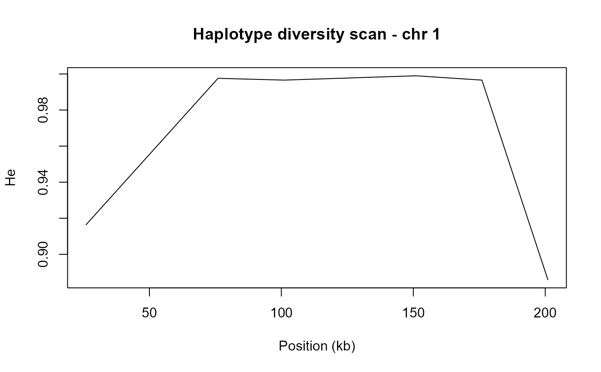

Computes haplotype diversity metrics (He, Shannon entropy, n_eff_alleles, dominant frequency) in sliding windows across the genome, independently of LD block boundaries. Useful for identifying diversity valleys (bottlenecks, selective sweeps) and comparing wild/elite panels without needing pre-defined blocks.
Usage
scan_diversity_windows(
geno_matrix,
snp_info,
window_bp = 1000000L,
step_bp = 500000L,
min_snps_win = 5L,
missing_val = NA
)Arguments
- geno_matrix
Numeric matrix (individuals x SNPs), 0/1/2/NA.
- snp_info
Data frame with
SNP,CHR,POS.- window_bp
Integer. Window size in base pairs. Default
1e6L(1 Mb).- step_bp
Integer. Step size in base pairs. Default
5e5L(500 kb, i.e. 50% overlap).- min_snps_win
Integer. Minimum SNPs in a window to compute diversity (windows with fewer are skipped). Default
5L.- missing_val
Numeric. Value representing missing data in
geno_matrix. DefaultNA.
Value
Data frame with one row per sliding window, sorted by
CHR then win_start. Columns:
CHRChromosome label.
win_start,win_endWindow boundaries (bp).
win_midWindow midpoint (bp).
n_snpsNumber of SNPs in the window.
n_indNumber of individuals with non-missing data.
n_haplotypesNumber of distinct haplotype strings.
HeNei (1973) expected heterozygosity, sample-size corrected.
ShannonShannon entropy of haplotype frequencies.
n_eff_allelesEffective number of alleles (1/sum(p_i^2)).
freq_dominantFrequency of the most common haplotype.
sweep_flagLogical; TRUE when freq_dominant >= 0.90.
Examples
# \donttest{
data(ldx_geno, ldx_snp_info, package = "LDxBlocks")
scan <- scan_diversity_windows(
geno_matrix = ldx_geno,
snp_info = ldx_snp_info,
window_bp = 50000L,
step_bp = 25000L,
min_snps_win = 3L
)
# Plot He across chromosome 1
chr1 <- scan[scan$CHR == "1", ]
plot(chr1$win_mid / 1e3, chr1$He, type = "l",
xlab = "Position (kb)", ylab = "He",
main = "Haplotype diversity scan - chr 1")

# }